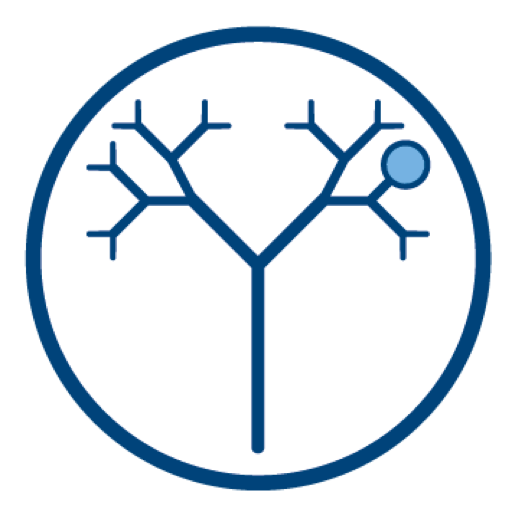
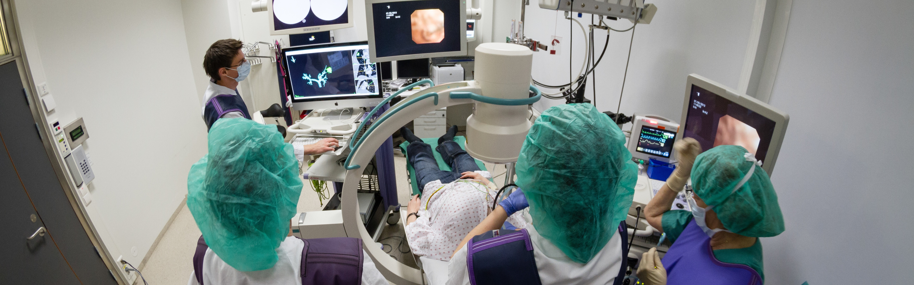
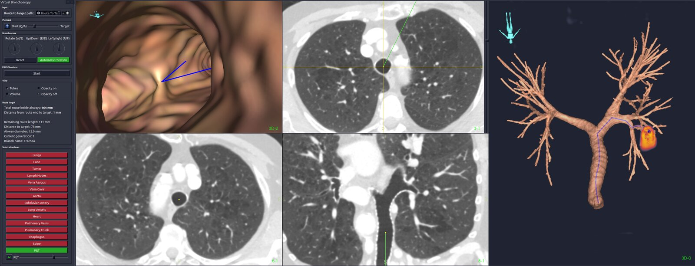
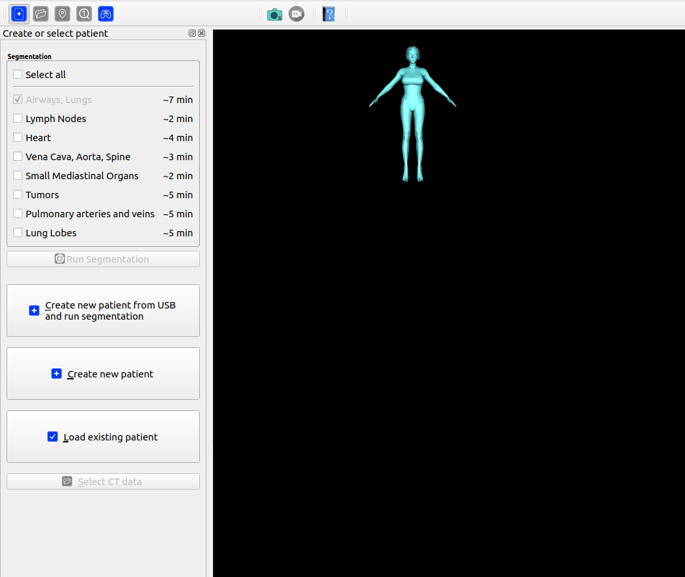
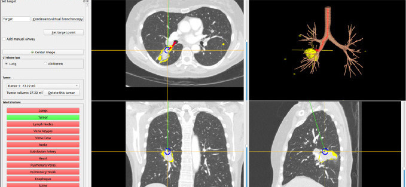
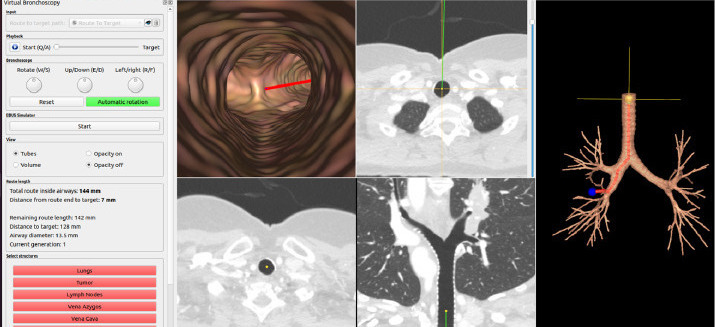
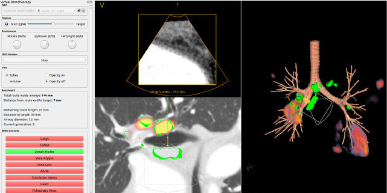
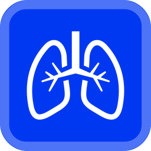
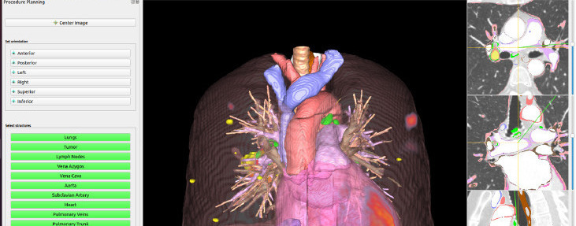

An Open Source Research Platform for Image-Guided Bronchoscopy

Fraxinus is an open-source research platform for image-guided bronchoscopy, developed by SINTEF Medical Technology in collaboration with St. Olavs Hospital, Trondheim University Hospital, Norway. Built on top of CustusX, Fraxinus guides the user through a streamlined pre-procedure workflow: CT data is imported directly from a USB drive or disk, airways and surrounding anatomy are segmented automatically, a route to the target lesion is planned, and the procedure is rehearsed via virtual bronchoscopy and EBUS simulation — all in four steps.

The source code is available on GitLab and mirrored on GitHub. External users are welcome to submit bug reports and feature requests on GitHub Issues.
SINTEF Digital
Department of Health Research
Medical Technology
P.O. Box 4760 Torgarden
NO-7465 Trondheim
Norway
Fraxinus is an open-source research platform for pre-procedure planning and simulation in bronchoscopy, developed by SINTEF Medical Technology in collaboration with St. Olavs Hospital, Trondheim University Hospital, Norway. It is built on top of CustusX and is free to use under a BSD-3 license.
Fraxinus is available for Ubuntu (22.04 and 24.04) and Windows. It is developed on Ubuntu, which is the recommended and most thoroughly tested platform. See Installation for how to install it.
The source code is available on GitLab and GitHub.
Fraxinus is free to use for everyone under a BSD-3 license.
Fraxinus is developed by SINTEF Medical Technology for St. Olavs Hospital, Trondheim University Hospital, Norway. The project has received funding from the Norwegian Research Council and several EU projects.
When publishing scientific work that uses Fraxinus, please cite the following publication:
Janne Beate Lervik Bakeng, Erlend Fagertun Hofstad, Ole Vegard Solberg, Jon Eiesland, Geir Arne Tangen, Tore Amundsen, Thomas Langø, Ingerid Reinertsen, Tormod Selbekk, Håkon Olav Leira. Using the CustusX toolkit to create an image guided bronchoscopy application: Fraxinus, PLOS ONE, 02/2019, DOI: 10.1371/journal.pone.0211772
Fraxinus is a pre-procedure planning and simulation platform for bronchoscopy research, built on top of CustusX. It is developed by SINTEF Medical Technology in collaboration with St. Olavs Hospital, Trondheim University Hospital, Norway, and is designed for use by expert personnel in a clinical research setting.
The application is organized into four steps, accessed via the workflow icons in the top toolbar: Patient, Set Target, Virtual Bronchoscopy and Procedure Planning. When segmentation is finished, Fraxinus moves from the Patient step to the Set Target step automatically. From Set Target you continue to Virtual Bronchoscopy with a button. Any step can be revisited at any time.
The toolbar also has an Import icon , placed between Patient and Set Target. It opens a general data import panel. You normally do not need it, because CT and PET data are imported from the Patient step.
1. Patient
The starting point for every session. Three options are available:
Tip: To import from USB with no extra steps, put only one Thorax CT series on the USB drive. To add PET, also include the PET series and its matching PET CT (nothing else). Fraxinus then assigns the data and starts segmentation by itself, without asking you to select series.

CT data is imported as a standard high-resolution Thorax CT in DICOM format. A PET series and the corresponding PET CT can optionally be imported at the same time to support metabolic target planning. When PET data is present, PET-to-CT registration runs automatically as part of segmentation.
The anatomical structures to segment are selected with the checkboxes in the Segmentation panel. Airways and lungs are always included; the remaining structures are optional. Select all checks every optional structure. The approximate processing time for each structure is shown next to its checkbox. The available structures are:
While segmentation runs, the selection panel is replaced by a Segmentation status panel. It shows a progress bar and a timer for each selected structure, and an estimated total time. If PET data was imported, PET-to-CT registration is listed as well. A running timer is shown in the normal text color, turns green when the structure has been segmented successfully, and turns red if the segmentation failed. Structures that have already been segmented are marked Done and cannot be selected again.
When segmentation is finished, a Segmentation completed message appears. Press OK and Fraxinus advances automatically to the Set Target step. To add more structures later, select them and press Run Segmentation.
2. Set Target
Place the crosshair on the target, either by clicking in the 2D CT views or by selecting a tumor in the Tumors list. Then press Set target point. The route from the trachea to the target is computed automatically and shown as a red line. The last part, from the end of the airways to the target, is shown in blue. The target can be renamed in the text field at the top of the panel. When the target is set, press Continue to virtual bronchoscopy.

3. Virtual Bronchoscopy
A virtual camera navigates the segmented airway tree from the trachea to the target, providing an endoscopic fly-through view synchronized with orthogonal CT cross-sections and a 3D overview. All segmented structures can be shown or hidden individually.
The Route length panel gives information about the planned route:
An EBUS simulator is also available within this step. A virtual endobronchial ultrasound probe (depth, 4 cm) is swept along the airway wall following the planned route, allowing the user to locate lymph nodes and other structures in a simulated ultrasound sector view alongside the CT and 3D model.


4. Procedure Planning

A general-purpose planning view displaying all segmented structures simultaneously in both 2D cross-sections and a 3D scene. Useful for reviewing anatomy and discussing the procedure approach before entering the bronchoscopy suite.

Select a type of documentation depending on your needs:
Guides and references for using Fraxinus in your research workflow.
API references, architecture overview, and instructions for extending Fraxinus.
Installers for Ubuntu 22.04, Ubuntu 24.04 and Windows are published on the GitLab releases page.
Fraxinus is developed on Ubuntu, and the Ubuntu builds are built and tested continuously. Ubuntu is therefore the recommended platform and the one where Fraxinus has been tested most. The Windows installer is also available, but it has not been tested and verified as thoroughly as the Ubuntu builds.
On Ubuntu, Fraxinus is installed with installFraxinus.sh, a single installer
script. It downloads Fraxinus and automatically sets up all required AI inference engines
(Raidionics, TotalSegmentator, Elastix) and models. There are two ways to run it. Choose
one of them.
Note: With both options, the installer installs system packages with
sudo, so you will be asked for your password while it runs. Your user must
have administrator (sudo) rights. Nothing is shown on screen while you type the password;
just type it and press Enter.
curl (recommended)Run these commands in a terminal. They always install the latest release:
sudo apt install curl -y # optional, if curl is not already installed curl -fsSL https://gitlab.sintef.no/custusx/fraxinus/-/releases/permalink/latest/downloads/installFraxinus.sh | bash
Download installFraxinus.sh and run it yourself (e.g. if you'd like to
inspect the script first):
installFraxinus.sh, usually to
your Downloads folder. (The link that has the version number in its name
downloads the same script as installFraxinus-vYY.MM.sh. If you use that
one, change the file name in the commands below.)cd ~/Downloads)
and run:chmod +x installFraxinus.sh ./installFraxinus.sh
If you already have an older copy, download the script again instead of running the old
one. Some browsers save a repeat download as a numbered copy
(installFraxinus (1).sh) instead of overwriting the old file. Then
./installFraxinus.sh would run the old version, or fail if the old file is
gone. Delete the old file before downloading, or run the new file by its actual name.
FraxinusWindows-vYY.MM.exe.
Note: Python 3 (version 3.10–3.12) must be installed before you run the
Windows installer. The setup steps use it to create the Python virtual environments.
Each setup step opens a console window, and the Raidionics and TotalSegmentator steps
can take a long time. If a step fails, the installer reports it at the end. The log
files are in %USERPROFILE%\Fraxinus\install_logs.
See the user documentation for supported platforms and known issues on Windows.
Download the latest Fraxinus release from GitLab:
View Releases on GitLab